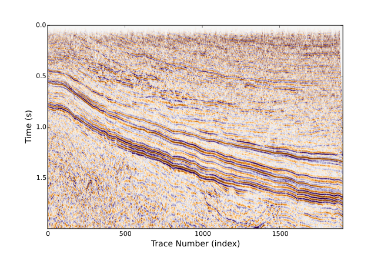

ReadWrite
Seismic.jl provides seismic data reading, writing and plotting. Currently, The conversions between .seis data format and .segy, .su and madagascar data format, bellow we give a simple example about converting SEGY data format to our internal data format.
Example
using PyPlot, Seismic,Compat download("http://certmapper.cr.usgs.gov/nersl/NPRA/seismic/1979/616_79/PROCESSED/616_79_PR.SGY", "616_79_PR.SGY"); SegyToSeis("616_79_PR.SGY", "616_79_PR.seis"); d, h, e = SeisRead("616_79_PR.seis"); SeisPlot(d[1:500, :], e, cmap="PuOr", wbox=9);
% Total % Received % Xferd Average Speed Time Time Time Current Dload Upload Total Spent Left Speed 0 0 0 0 0 0 0 0 --:--:-- --:--:-- --:--:-- 0 0 0 0 0 0 0 0 0 --:--:-- --:--:-- --:--:-- 0 0 0 0 0 0 0 0 0 --:--:-- --:--:-- --:--:-- 0 3 11.3M 3 416k 0 0 280k 0 0:00:41 0:00:01 0:00:40 410k 55 11.3M 55 6416k 0 0 2650k 0 0:00:04 0:00:02 0:00:02 3288k 100 11.3M 100 11.3M 0 0 3984k 0 0:00:02 0:00:02 --:--:-- 4750k number of traces: 1908 number of samples per trace: 1500
In above example, we first download the data from USGS's website, then convert the data from SEGY data format to our internal format, finally the data are plotted. 